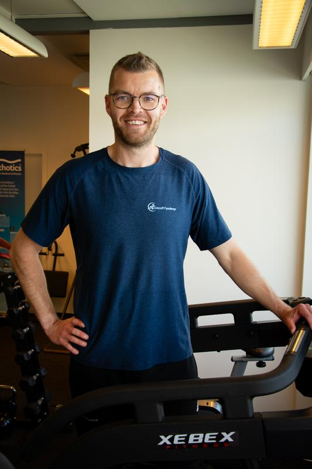

"Allerede efter én behandling ved Nicolai mærkede jeg en tydelig forskel og nu har jeg ikke længere hovedpine. Det er dejligt at lægge pillerne på hylden."
Fysioterapi · Langeskov · Østfyn
Fysioterapi med høj faglighed
Få sammensat et fleksibelt behandlingsforløb, som ikke bare fjerner smerten her og nu, men også på den lange bane, og sikrer dig færre konsultationer.
Fysioterapi på Fyn
Hvad generer dig?
Vi behandler alt fra rygsmerter og iskias til skuldersmerter, knæsmerter, hælspore og kæbeproblemer. Vælg dit område og læs mere.
Hovedpine
Spændingshovedpine, nakkesmerter, migræne
Nakke og skuldre
Frossen skulder, impingement, rotator cuff
Ryg og lænd
Lændesmerter, iskias, hold i ryggen
Knæ og hofter
Løberknæ, menisk, hofte smerter
Kæbegener
TMD behandling, kæbesmerter, spændinger
Fødder og ankler
Hælspore, svangsenebetændelse, Formthotics
Sportsskader
Sportsfysioterapi Fyn, genoptræning, screening
Noget andet?
Se alle behandlinger
Hvad kan jeg hjælpe med?
Behandling for alle
Grocott Fysioterapi henvender sig til alt fra elite-sportsudøvere til aktive børn, unge, voksne og ældre.
Desuden samarbejder jeg med virksomheder og idrætsklubber, hvor jeg laver skræddersyede løsninger alt efter jeres behov. Nedenstående er eksempler på problemstillinger jeg løser.
- Hovedpine
- Behandling af kæbegener
- Nakke og skuldergener
- Overbelastningsskader
- Rygsmerter
- Smerter fra knæ og hofter
- Smerter i underben
- Udfordringer i ankel og fødder
- Slidgigt

"Nicolai kigger på hele mennesket og ikke kun den udfordring man kommer med."
Hvad siger klienterne
Anmeldelser
"Nicolai har en lidt anden tilgang end jeg tidligere har prøvet. Det har virkeligt været effektivt og en stor aha-oplevelse, hvor meget jeg selv kan gøre for at afhjælpe mine smerter. Anbefales varmt."
"Nicolai kigger på hele mennesket og ikke kun den udfordring man kommer med. Aldrig har jeg mødt en så grundig og nysgerrig fysioterapeut."
Tak for at hjælpe andre
Har du været
Har du været
i stolen?
Anmeldelser fra rigtige klienter er det bedste, jeg kan vise andre. Som tak får du 10% rabat på din næste konsultation.
- Tager kun 2 minutter
- Rabatten trækkes fra ved næste besøg
- Du bestemmer selv om den vises
Ring til Nicolai: 60 86 67 70
10%
RABAT
Find rundt
Hurtigt til det, du leder efter
01
Om Grocott
Lær mig at kende. Min uddannelse, mine kurser og min tilgang til kroppen som en helhed.
Læs mere
02
Behandlinger
Hovedpine, skulder, knæ, fødder, kæbegener, massage, holdtræning og meget mere.
Læs mere
03
Ryg
Akutte hold, kronisk lændesmerte, iskias og nakkesmerter. Filtrer efter din problematik.
Læs mere
04
Booking
Bestil tid online. Vælg behandling, dato og tidspunkt - du modtager bekræftelse på mail med det samme.
Læs mere
05
Priser
Konsultationer fra 185 kr. til 1.000 kr. afhængig af varighed. Tilskud fra Sygeforsikring Danmark.
Læs mere
06
Anmeldelser
Hvad siger klienterne? Læs anmeldelser fra rigtige klienter, og del gerne din egen oplevelse.
Læs mere
FAQ
Spørgsmål, jeg ofte får
Svar på det, mange klienter spørger om før første konsultation. Mangler du noget? Ring 60 86 67 70.
Nej. Grocott Fysioterapi arbejder uden for overenskomst, og lægehenvisning er derfor ikke en forudsætning. Det betyder også, at du ikke kan få det offentlige sygesikringstilskud, men jeg samarbejder med de fleste sundhedsforsikringer, og medlemmer får tilskud fra Sygeforsikring Danmark.
Nej, ingen af delene. Du booker direkte via formularen nedenfor med kun navn, e-mail og telefonnummer. Du modtager en bekræftelse på mail med det samme, og afbud op til 24 timer før konsultationen er gratis.
Det afhænger helt af din problematik. Vi aftaler varigheden ved første samtale, når du booker. Konsultationer fås i 15, 30, 45, 60, 90 og 120 minutter. Opfølgende behandlingers varighed bestemmes ud fra fremskridt og næste skridt i forløbet.
Jeg starter med en grundig anamnese, din historie, dine symptomer, hvordan udfordringen påvirker hverdagen og hvad du allerede har prøvet. Derefter en holdningsanalyse og funktionstests, hvor jeg danner mig et billede af hvad jeg ser. Så følger behandlingen og en forklaring af, hvad jeg gør og hvorfor.
Næsten altid. Øvelserne tilpasses din hverdag, nogle ønsker simple redskaber, der kan laves hvor som helst, mens andre er klar på en målrettet plan i træningscentret. Pointen er, at du får værktøjer til at hjælpe dig selv mellem konsultationerne og på den lange bane.
Ja, der tilbydes akuttider i ydertidspunkter og i weekender til pludseligt opståede smerter eller skader. Der vurderes altid ved tidsbestilling, om akuttid er det rigtige, eller om det kræver en anden sundhedsfaglig vurdering. Akuttillæg på 300 kr. tillægges prisen, du informeres altid om dette på forhånd.
Absolut. Klinikken henvender sig til alt fra elite-sportsudøvere til aktive børn, unge, voksne og ældre. Jeg samarbejder også med virksomheder og idrætsklubber om skræddersyede løsninger, kontakt mig hvis I ønsker en aftale på klubniveau.
Langeskov Centret 1, butik 3, 5550 Langeskov, på Østfyn, godt placeret mellem Odense og Nyborg. Der er gode parkeringsforhold og adgang for kørestolsbrugere.